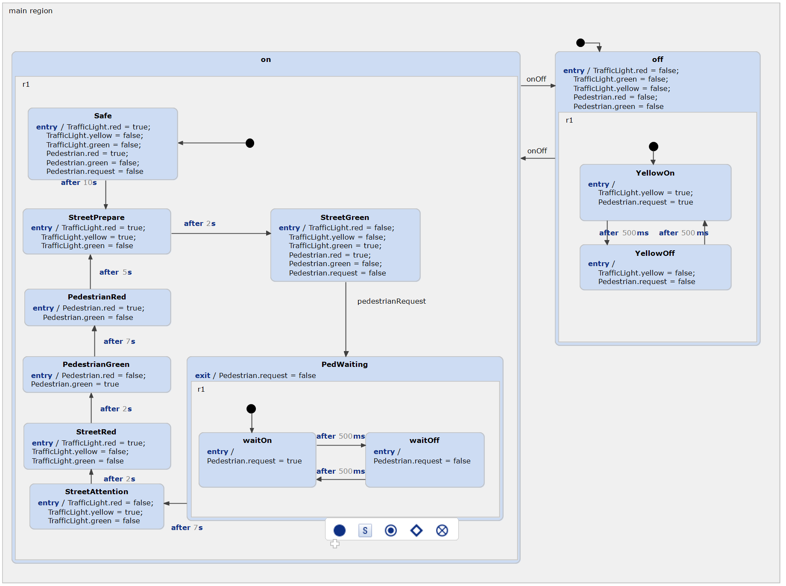
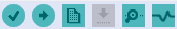

Traffic Light (C) for Arduino
Based on the standard traffic light example, this project shows how to use a statechart to develop software for the Arduino platform.

More information about the statechart itself can be found in the standard traffic light example, which should be considered first. In summary, we have two traffic lights: one for the traffic on the street, and one for pedestrians who want to cross the street. They can push a button to request their traffic light to turn green, which activates a blinking wait-light first. The street's traffic light then goes through the standard procedure, turning on the yellow light, followed by the red light, allowing the pedestrians to cross safely. After some time, the pedestrians' traffic light turns red again, and the cars are allowed to pass until the next request is made by a pedestrian.
Additionally, the traffic light can be switched off completely. This turns the yellow lights into a blinking mode, signaling that the traffic light is indeed switched off and that the street should be crossed in a careful manner.
Installing the Arduino Plugin
To compile the generated C code for Arduino, you should install an Eclipse plugin that can handle this and provides the needed libraries. In this example we're using the Sloeber plugin. On Windows, you should also install the regular Arduino IDE, because Windows is lacking the drivers to use the Arduino without Arduino IDE.
The easiest way of how to install the plugin is using the example wizard. Select the 'Traffic Light (C) for Arduino' example, click on 'Install Dependencies...' and follow the instructions. Your IDE may restart. SCT will restart and download the necessary Arduino libraries for you.
Another way is using the update side, which can be found at http://eclipse.baeyens.it/. In YAKINDU SCT, simply install it by selecting Help → Install New Software in the main menu, typing or pastinghttp://www.baeyens.it/eclipse/V4
into the proper field, and follow the regular procedure. SCT will
restart and download the necessary Arduino libraries for you.
Building the Hardware

Get your parts ready! You will need:
- 2 push buttons
- 6 LEDs, ideally:
- 2x red
- 2x green
- 1x yellow
- 1x white
- 8 resistors:
- 2x 10kR or similar
- 6x 220R or similar
Of course you can change the pins, but since this represents the pin numbers in the software, don't forget to change them as well.
Building the Project
With this example being active in your workspace, with the Arduino plugin installed, the Arduino connected, and the correct port set in Project → Properties → Arduino, you can now build the example and upload it to your Arduino. Also, ensure you have selected the correct arduino and toolchain path.
You should have seen the new buttons in your SCT installation:

Use the button second from the left to build and upload the code in one step.
In-Depth Walk-Through
If this short instruction has left you with questions, refer to the blog post on the itemis website.